| Name | Image | Rarity | Type | Cost | Description |
|---|
| Boot | 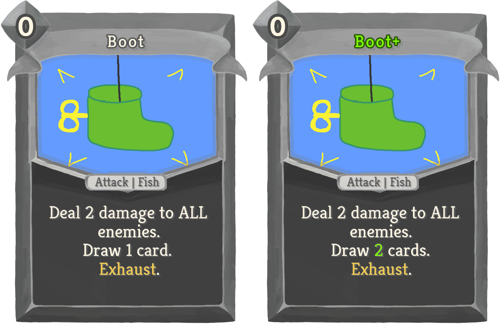 | Special | Attack | 0 | Deal 2 damage to ALL enemies. Draw 1 (2) card(s). Exhaust. |
| Cheat |  | Special | Attack | 1 | Remove the enemy's Block. Deal 9 (12) damage. Add a Steal into your hand. Exhaust. |
| Eel |  | Special | Skill | 0 | Gain [E]. Draw 1 (2) card(s). Exhaust. |
| Flag |  | Special | Skill | 0 | Retain. Gain 6 (9) Block. Exhaust. |
| Flight | 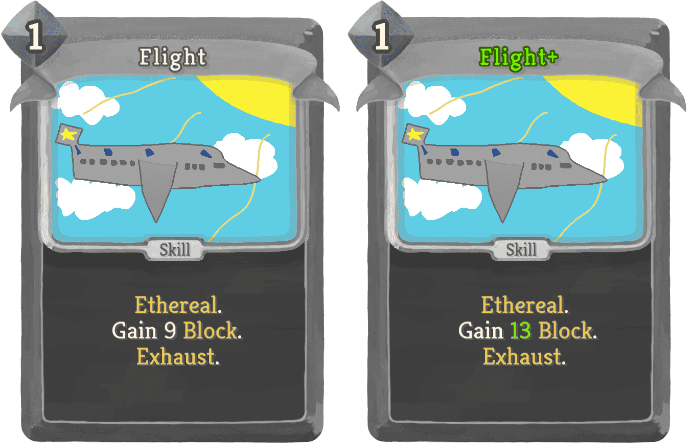 | Special | Skill | 1 | Ethereal. Gain 9 (13) Block. Exhaust. |
| Guppy | 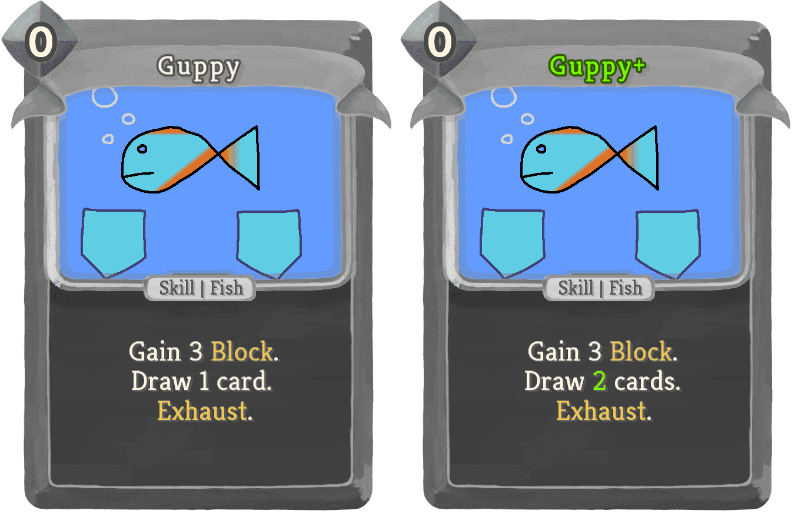 | Special | Skill | 0 | Gain 3 Block. Draw 1 (2) card(s). Exhaust. |
| Hammerhead |  | Special | Skill | 0 | Gain 1 Strength. Draw 1 (2) card(s). Exhaust. |
| Maw |  | Special | Attack | 0 | Deal 3 damage twice. Draw 1 (2) card(s). Exhaust. |
| Mecherel |  | Special | Skill | 0 | Gain 1 Artifact. Draw 1 (2) card(s). Exhaust. |
| Octopus | 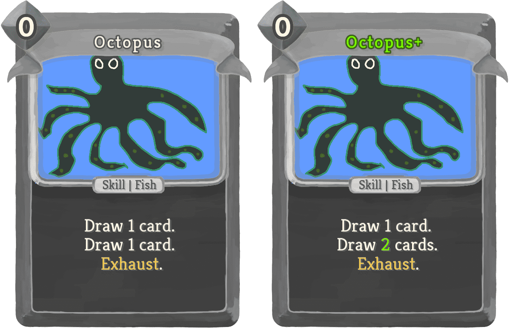 | Special | Skill | 0 | Draw 1 card. Draw 1 (2) card(s). Exhaust. |
| Pinball |  | Special | Attack | 1 | Deal 2 (3) damage to a random enemy 4 times. Exhaust. |
| Piranha |  | Special | Attack | 0 | Deal 4 damage. Draw 1 (2) card(s). Exhaust. |
| Power Pellet |  | Special | Skill | 0 | *Waka Wakas deal 6 (9) additional damage. Exhaust. |
| Qwilfish | 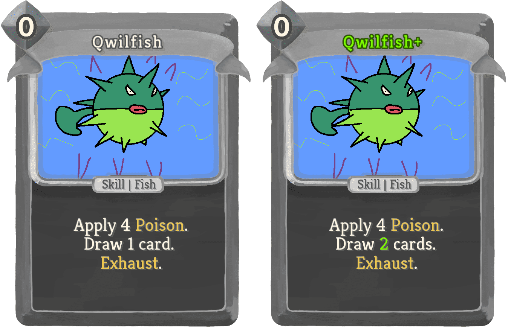 | Special | Skill | 0 | Apply 4 Poison. Draw 1 (2) card(s). Exhaust. |
| Sea Monster | 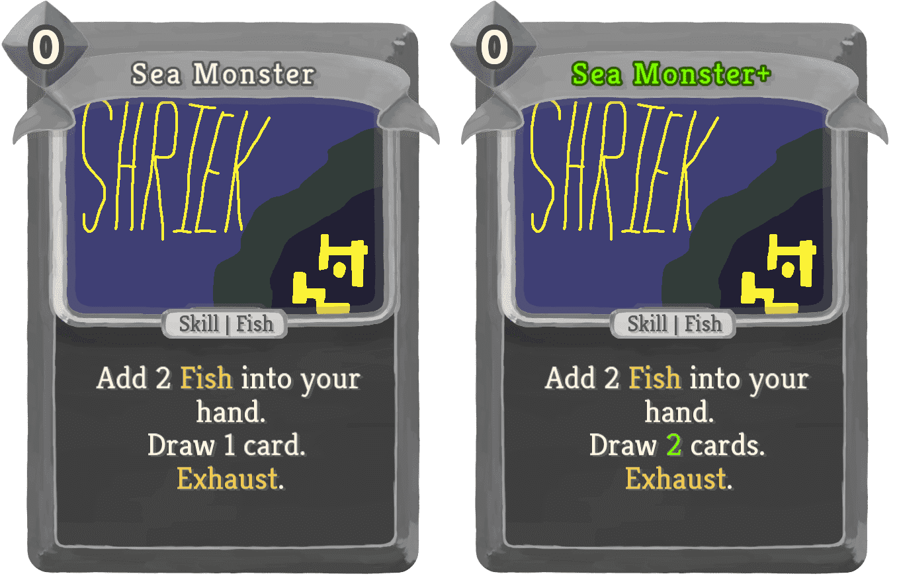 | Special | Skill | 0 | Add 2 fishing:Fish into your hand. Draw 1 (2) card(s). Exhaust. |
| Shark | 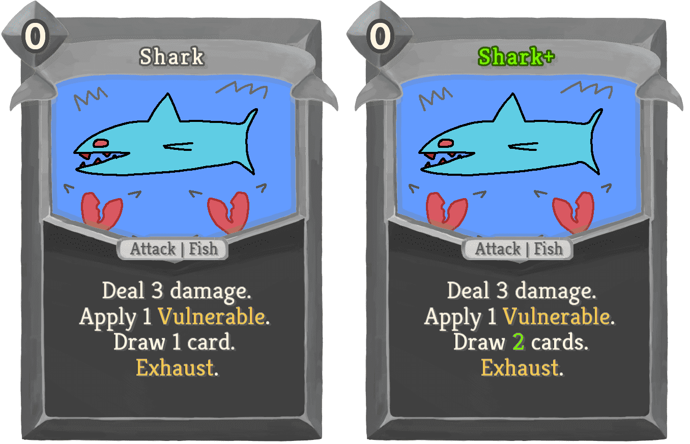 | Special | Attack | 0 | Deal 3 damage. Apply 1 Vulnerable. Draw 1 (2) card(s). Exhaust. |
| Starfish |  | Special | Attack | 0 | Deal 3 damage. Apply 1 Weak. Draw 1 (2) card(s). Exhaust. |
| Steal | 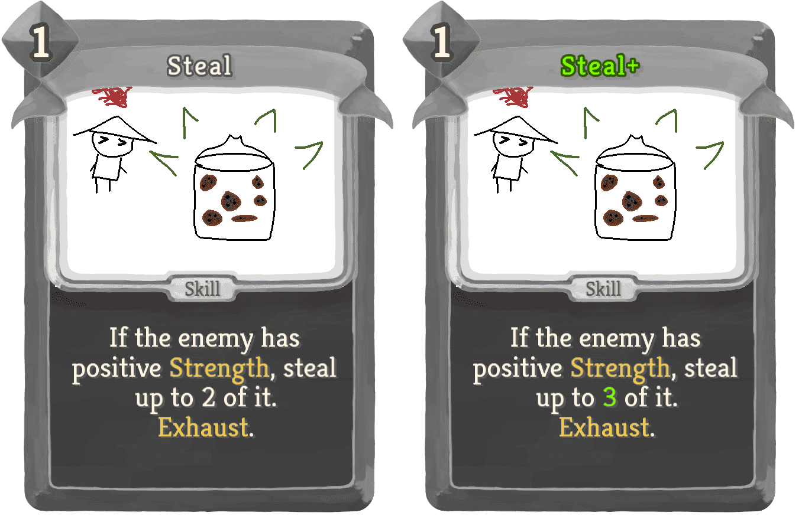 | Special | Skill | 1 | If the enemy has positive Strength, steal up to 2 (3) of it. Exhaust. |
| Swordfish |  | Special | Attack | 0 | Gain 3 Block. Deal 4 damage. Draw 1 (2) card(s). Exhaust. |
| The Eternity Gem |  | Special | Attack | 1 | Deal 11 (12) damage to a random enemy 11 (12) times. Exhaust. |
| The Gem Search |  | Special | Power | 1 (0) | fishing:Quest: End your turn with an empty hand. Reward: Shuffle The Eternity Gem into your draw pile. |
| The Whale |  | Special | Skill | 0 | Enemy loses 20 HP. Draw 1 (2) card(s). Exhaust. |
| Stone | 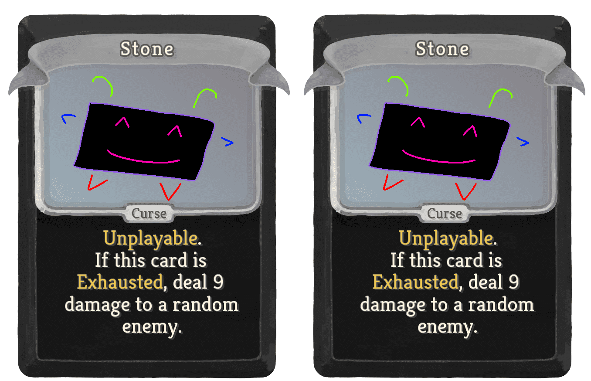 | Curse | Curse | | Unplayable. If this card is Exhausted, deal 9 damage to a random enemy. |
| Cast Line | 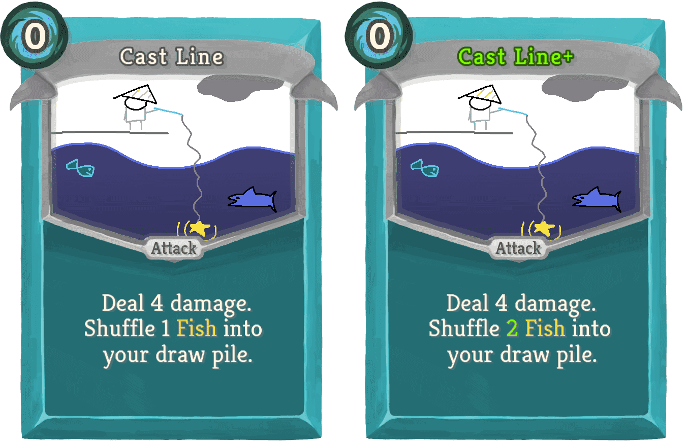 | Basic | Attack | 0 | Deal 4 damage. Shuffle 1 (2) fishing:Fish into your draw pile. |
| Defend |  | Basic | Skill | 1 | Gain 5 (8) Block. |
| Strike | 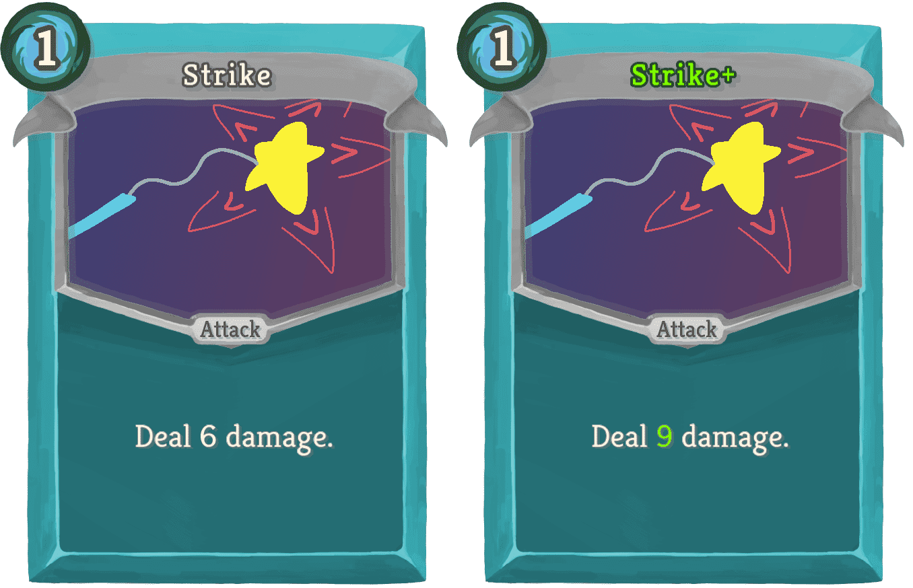 | Basic | Attack | 1 | Deal 6 (9) damage. |
| Bag of Defends |  | Common | Skill | X | Gain 6 (8) Block X times. When you remove a (Stuffed with) Defend(s) from your deck, Upgrade this (not from your deck, Upgrade this). |
| Baited |  | Common | Attack | 2 | Deal 14 (20) damage. If the enemy intends to attack, add 2 fishing:Fish into your hand. |
| Cardboard Bullets | 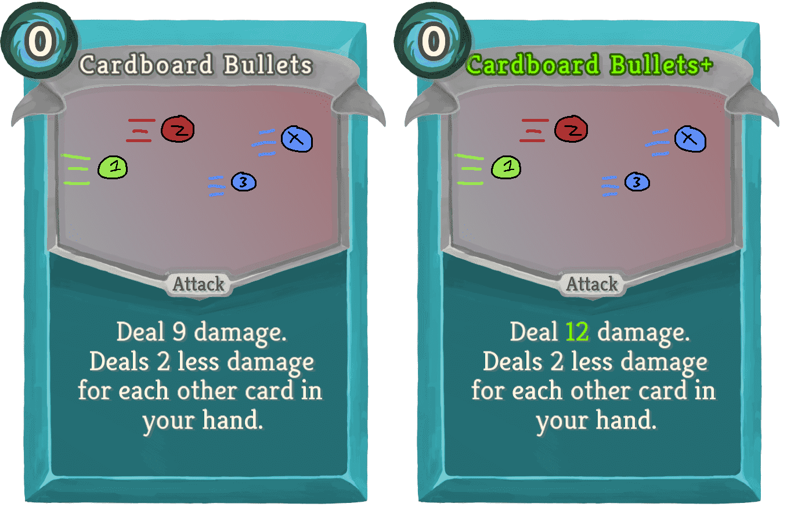 | Common | Attack | 0 | Deal 9 (12) damage. Deals 2 less damage for each other card in your hand. |
| Double Up | 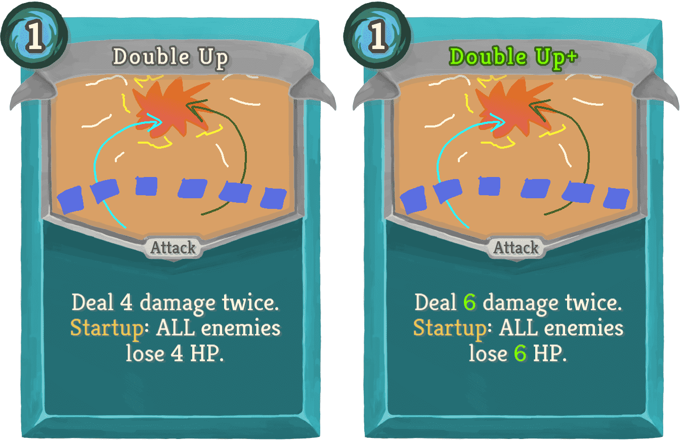 | Common | Attack | 1 | Deal 4 (6) damage twice. Startup: ALL enemies lose 4 (6) HP. |
| Future Proofing | 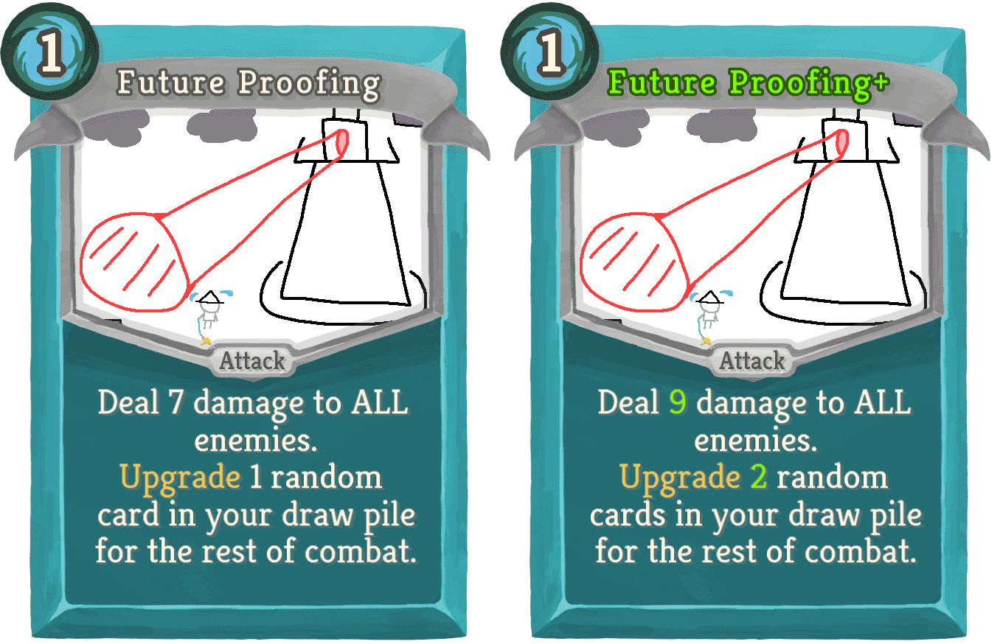 | Common | Attack | 1 | Deal 7 (9) damage to ALL enemies. Upgrade 1 (2) random card(s) in your draw pile for the rest of combat. |
| Hunker Down |  | Common | Skill | 0 | Gain 1 (3) Block. If you have played less than 3 cards this turn, gain [E]. |
| Maybe Later | 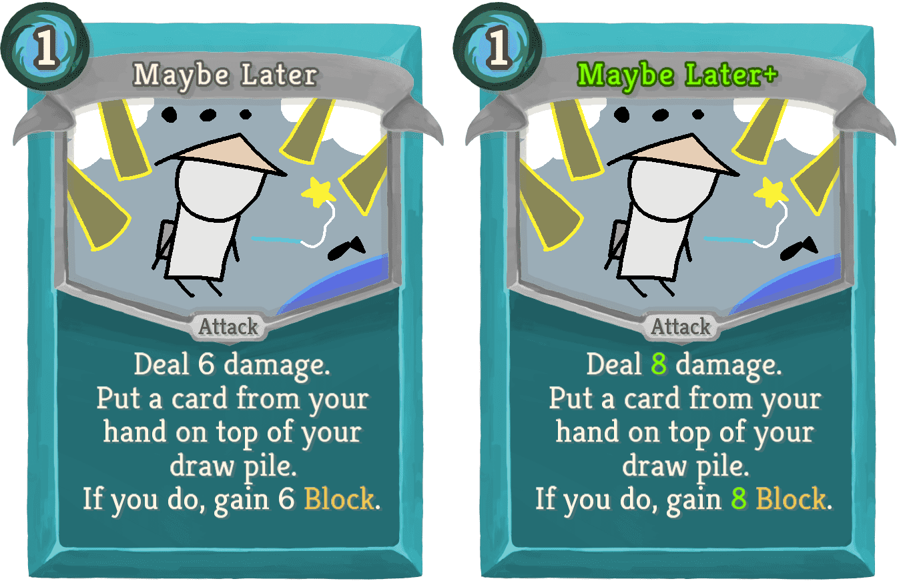 | Common | Attack | 1 | Deal 6 (8) damage. Put a card from your hand on top of your draw pile. If you do, gain 6 (8) Block. |
| Mop Up |  | Common | Attack | 1 | Deal 8 (11) damage. Exhaust a card. If it's a Status or Curse card, draw 1 card. |
| Nostalgic Strike |  | Common | Attack | 1 | Deal 9 (12) damage. Put a random card from your discard pile into your hand. |
| Oblivious | 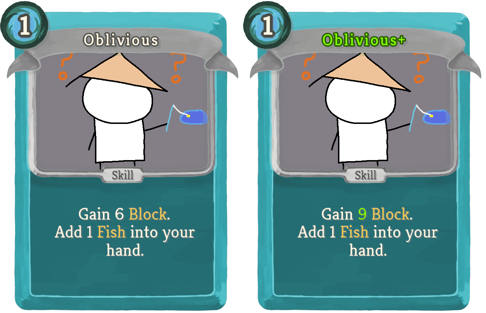 | Common | Skill | 1 | Gain 6 (9) Block. Add 1 fishing:Fish into your hand. |
| Perfect Pull |  | Common | Attack | 1 | Deal 7 (10) damage. Draw 1 card. If you drew a fishing:Foil card this way, deal 7 (10) damage again. |
| Plant Flag | 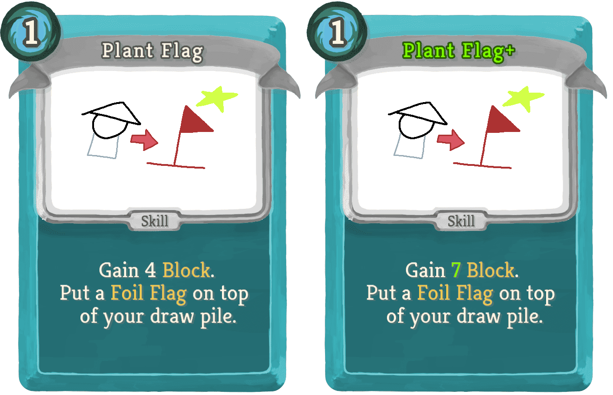 | Common | Skill | 1 | Gain 4 (7) Block. Put a fishing:Foil Flag on top of your draw pile. |
| Rod Slam |  | Common | Attack | 1 | Deal 12 (16) damage. Next turn, draw 1 less card. |
| Set Sail |  | Common | Skill | 0 | Draw 1 card. Discard 1 card. Gain 2 (4) Vigor. |
| Shiny Shots |  | Common | Attack | 2 | Deal 5 (6) damage 3 times. Gain 2 (3) Block for each fishing:Foil card in your hand. |
| That's All, Folks! | 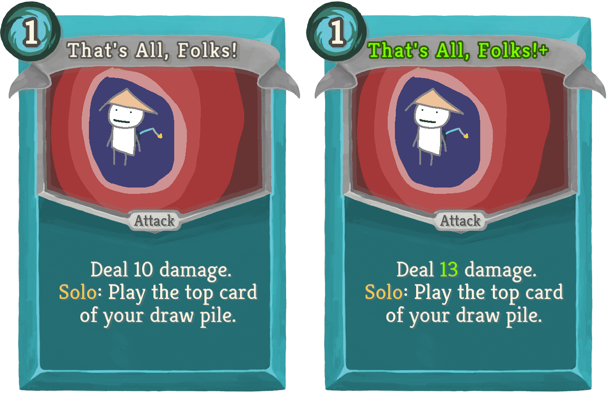 | Common | Attack | 1 | Deal 10 (13) damage. fishing:Solo: Play the top card of your draw pile. |
| Thorny Personality | 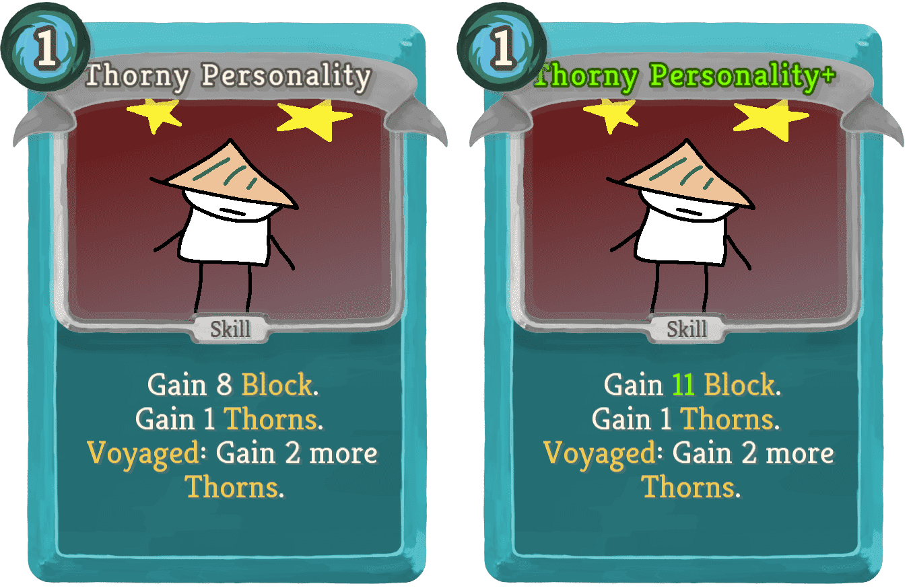 | Common | Skill | 1 | Gain 8 (11) Block. Gain 1 Thorns. fishing:Voyaged: Gain 2 more Thorns. |
| Wander |  | Common | Attack | 1 | Deal 8 (11) damage. Choose a card from your draw pile to put on top. |
| All Out | 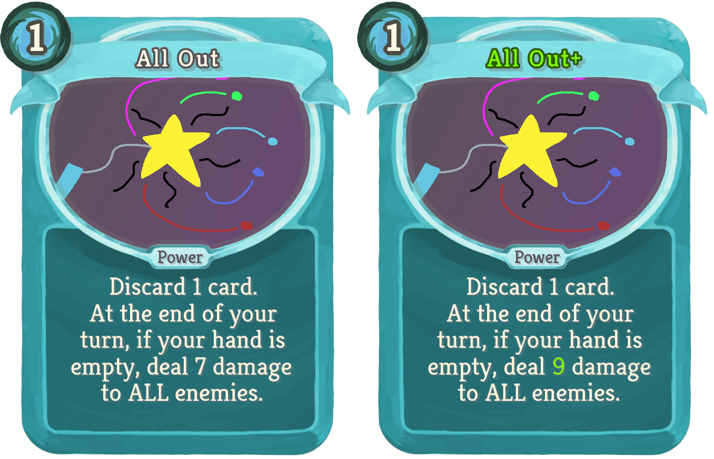 | Uncommon | Power | 1 | Discard 1 card. At the end of your turn, if your hand is empty, deal 7 (9) damage to ALL enemies. |
| Aqua Orb | 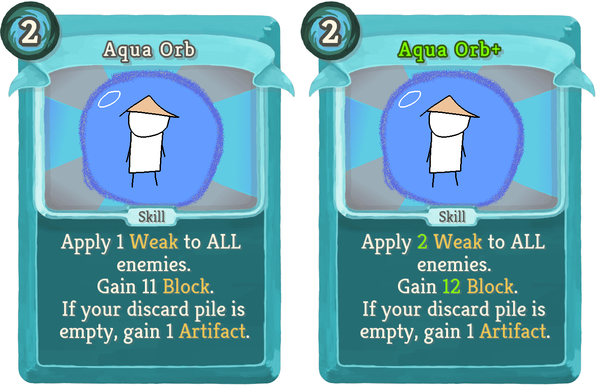 | Uncommon | Skill | 2 | Apply 1 (2) Weak to ALL enemies. Gain 11 (12) Block. If your discard pile is empty, gain 1 Artifact. |
| Bobber |  | Uncommon | Skill | 1 | Gain 7 (8) Block. If you draw this during your turn, gain 7 (8) Block and 1 (2) Strength. |
| Box of Havoc |  | Uncommon | Skill | 1 | Apply 3 (5) Poison to ALL enemies. fishing:Solo: Apply 3 Weak and Vulnerable to ALL enemies. |
| Cannoneer |  | Uncommon | Attack | X | Deal 8 (11) damage to a random enemy X times. |
| Catch of the Day |  | Uncommon | Power | 1 | (Innate.)At the end of your turn, put a fishing:Fish on top of your draw pile. |
| Decked Out |  | Uncommon | Skill | 1 | Add 2 (3) Shivs and a fishing:Foil Smite into your hand. If you're on Steam Deck, Upgrade them. |
| Fasting-B | 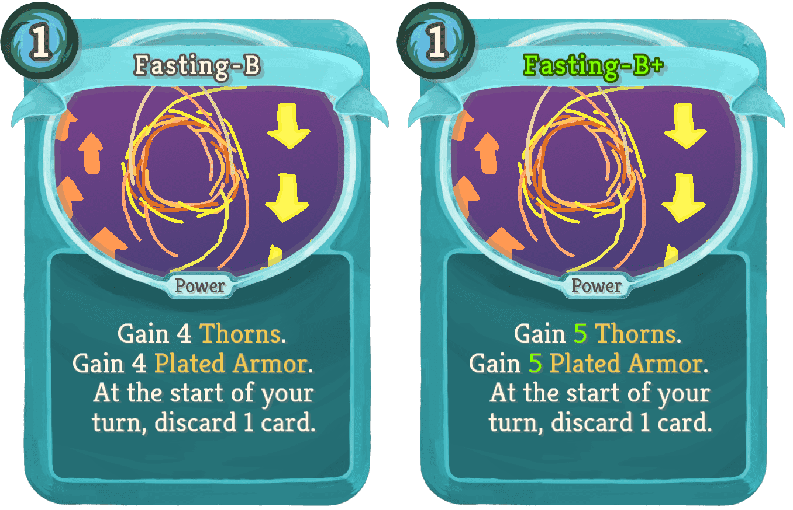 | Uncommon | Power | 1 | Gain 4 (5) Thorns. Gain 4 (5) Plated Armor. At the start of your turn, discard 1 card. |
| First Class |  | Uncommon | Power | 1 | (Innate.)At the start of your turn, add a fishing:Foil Flight into your hand. |
| Flaming Flip |  | Uncommon | Skill | 1 | Gain 5 (8) Block. Exhaust 1 card. Draw 1 card. |
| Free Drinks |  | Uncommon | Skill | 2 | ALL enemies lose 2 (3) Strength. Exhaust. When you obtain this, obtain a random Potion. |
| Garlic Clove | 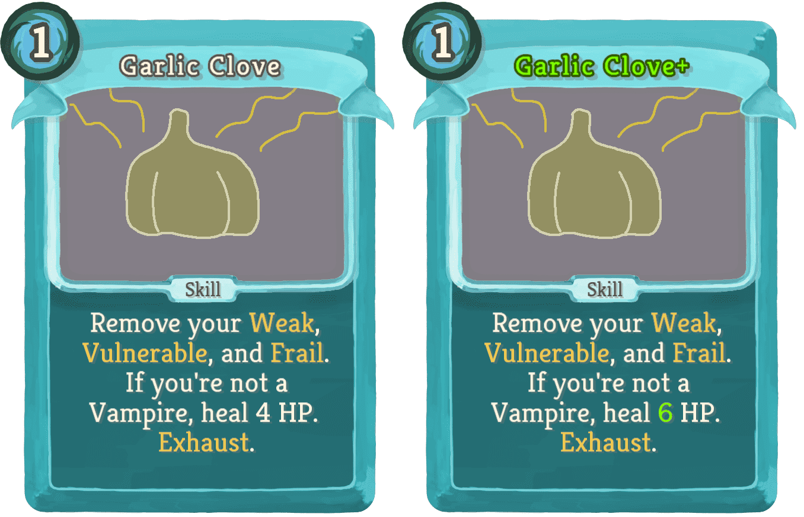 | Uncommon | Skill | 1 | Remove your Weak, Vulnerable, and Frail. If you're not a Vampire, heal 4 (6) HP. Exhaust. |
| Glitter Glue | 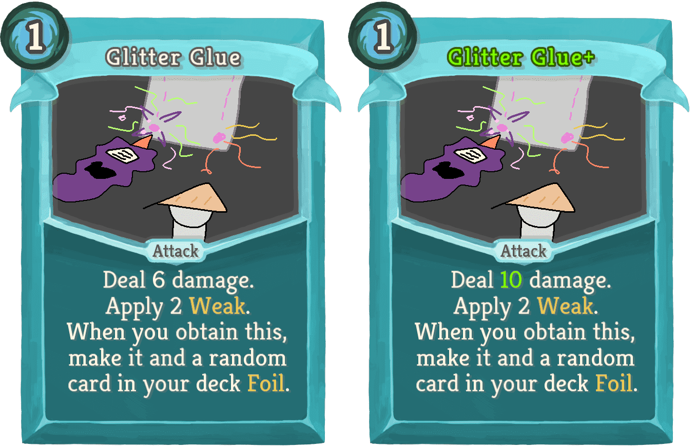 | Uncommon | Attack | 1 | Deal 6 (10) damage. Apply 2 Weak. When you obtain this, make it and a random card in your deck fishing:Foil. |
| Hook | 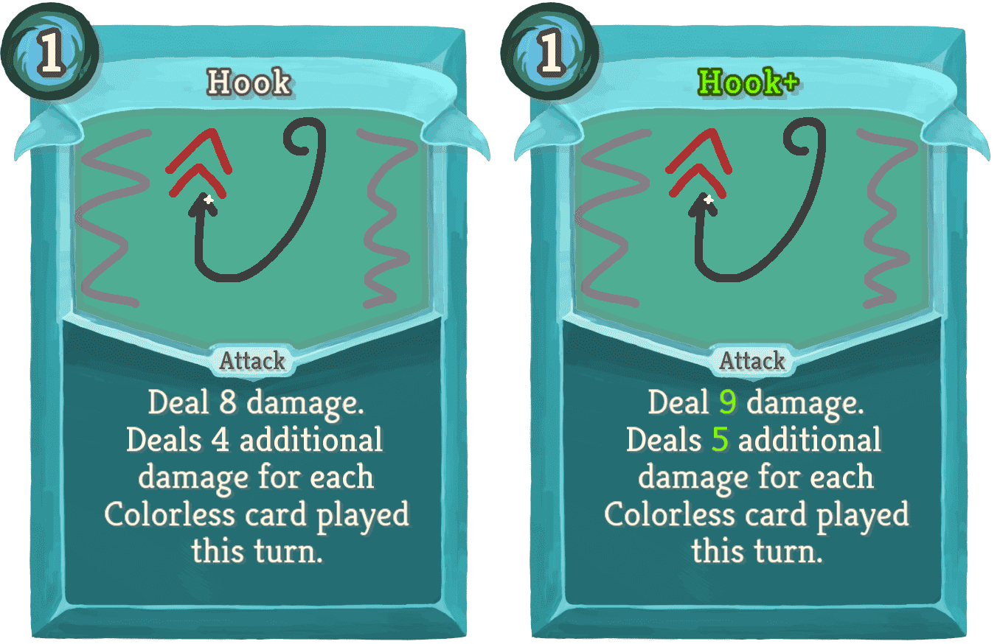 | Uncommon | Attack | 1 | Deal 8 (9) damage. Deals 4 (5) additional damage for each Colorless card played this turn. |
| Lie |  | Uncommon | Skill | 1 | ALL enemies lose 4 (6) Strength this turn. Add a Cheat into your hand. Exhaust. |
| Mint Condition | 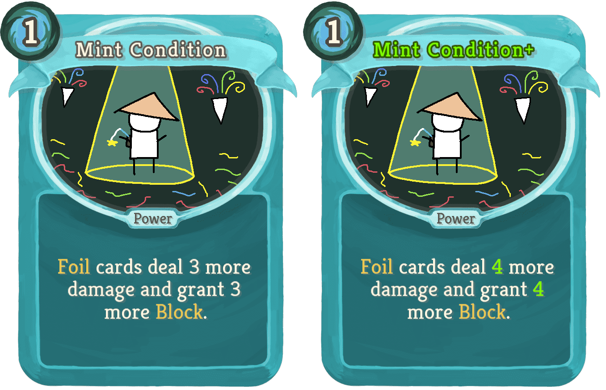 | Uncommon | Power | 1 | fishing:Foil cards deal 3 (4) more damage and grant 3 (4) more Block. |
| Preclude | 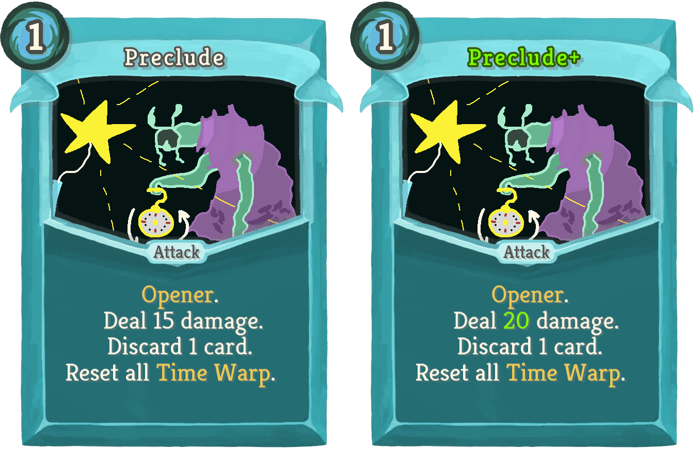 | Uncommon | Attack | 1 | Opener. Deal 15 (20) damage. Discard 1 card. Reset all Time Warp. |
| Pyramid Climb |  | Uncommon | Skill | 1 | Gain 13 (17) Block. Shuffle a Stone into your draw pile. |
| Reserves |  | Uncommon | Power | 1 (0) | After you play a cost X card, gain [E]. |
| Ridiculous Fishing |  | Uncommon | Power | 1 | Whenever you play a fishing:Fish, deal 3 (5) damage to a random enemy. |
| Ring the Bell | 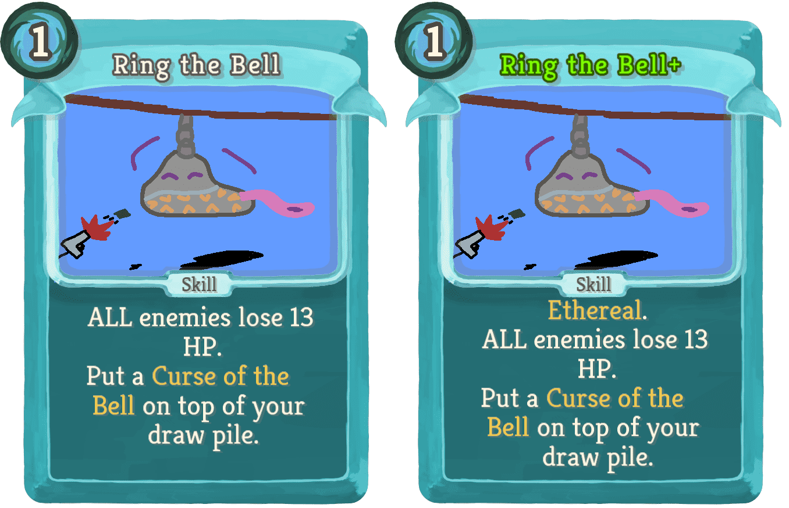 | Uncommon | Skill | 1 | (Ethereal.)ALL enemies lose 13 HP. Put a Curse of the Bell on top of your draw pile. |
| Setdown | 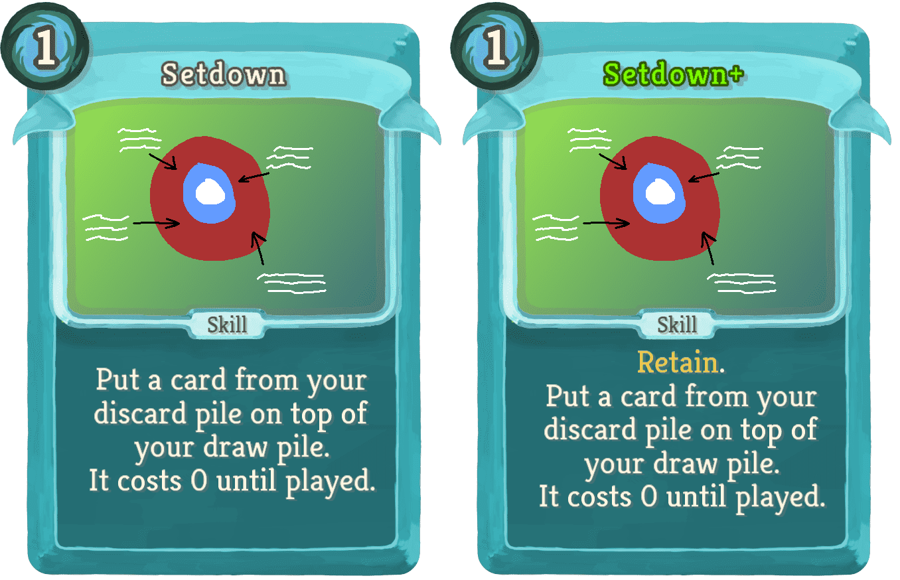 | Uncommon | Skill | 1 | (Retain.)Put a card from your discard pile on top of your draw pile. It costs 0 until played. |
| Shimmering Shield |  | Uncommon | Skill | 1 | Gain 6 (9) Block. Whenever you play a fishing:Foil card this turn, add a Shiv into your hand. |
| Ship Ram | 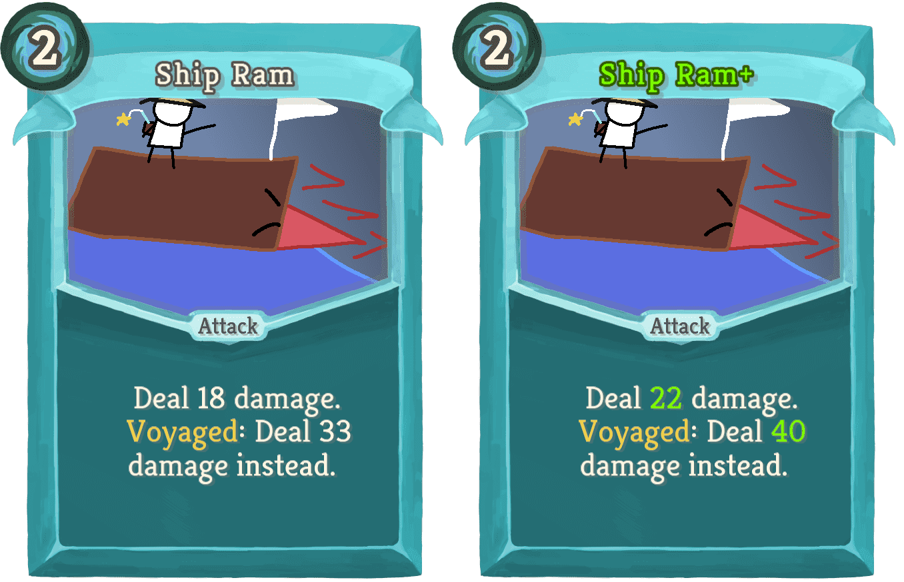 | Uncommon | Attack | 2 | Deal 18 (22) damage. fishing:Voyaged: Deal 33 (40) damage instead. |
| Shopping Strike | 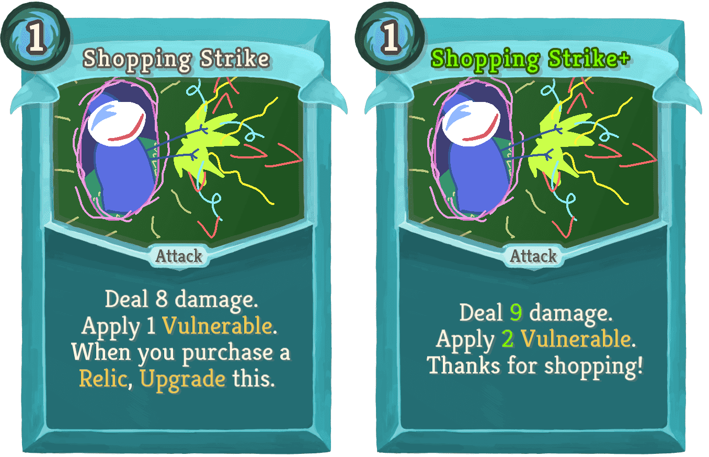 | Uncommon | Attack | 1 | Deal 8 (9) damage. Apply 1 (2) Vulnerable. When you purchase a Relic, Upgrade this. (Thanks for shopping!) |
| Sole Searching |  | Uncommon | Skill | 0 | Scry 2 (3). fishing:Solo: Gain 2 (3) Strength. |
| Splash |  | Uncommon | Attack | 2 | Gain 13 (16) Block. Deal 13 (16) damage. This card's damage and Block are reduced by 2 for each other card in your hand. |
| Standoff | 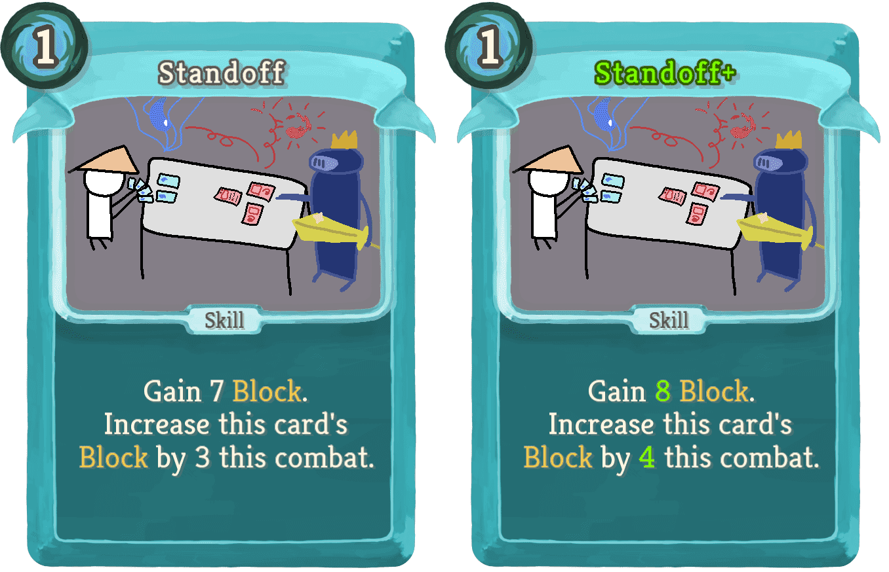 | Uncommon | Skill | 1 | Gain 7 (8) Block. Increase this card's Block by 3 (4) this combat. |
| The Fish-O-Pedia |  | Uncommon | Skill | 1 | Gain 6 (10) Block. fishing:Quest: Play 3 different kinds of fishing:Fish. Reward: Gain 3 Strength. |
| The Lucky Pack |  | Uncommon | Attack | 1 | Deal 9 (13) damage. fishing:Quest: Play 3 fishing:Foil cards in a turn. Reward: Gain 3 Plated Armor. |
| The Storm | 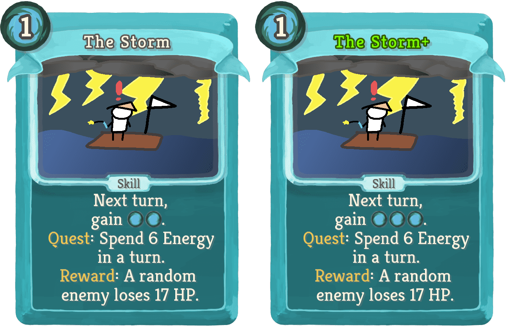 | Uncommon | Skill | 1 | Next turn, gain [E] [E] ([E]). fishing:Quest: Spend 6 Energy in a turn. Reward: A random enemy loses 17 HP. |
| Treasure Chest | 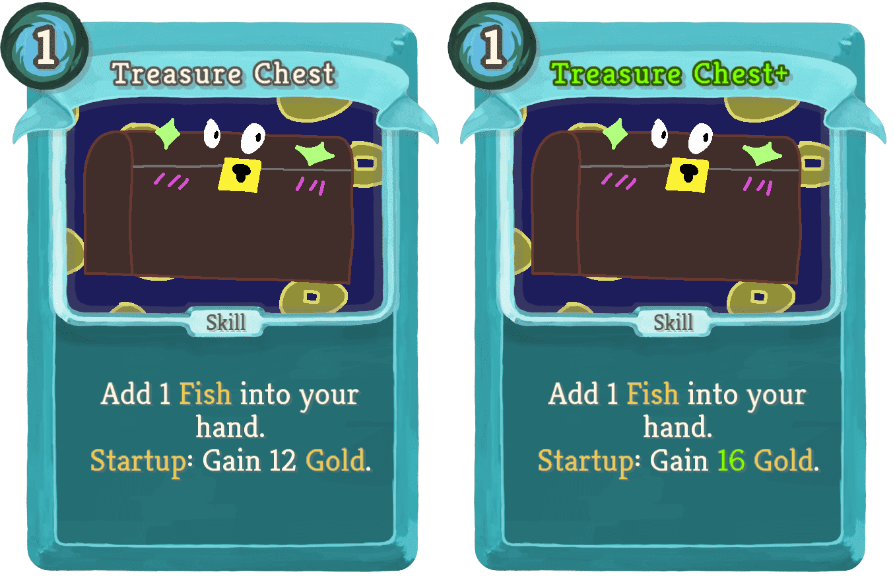 | Uncommon | Skill | 1 | Add 1 fishing:Fish into your hand. Startup: Gain 12 (16) Gold. |
| Waka Waka | 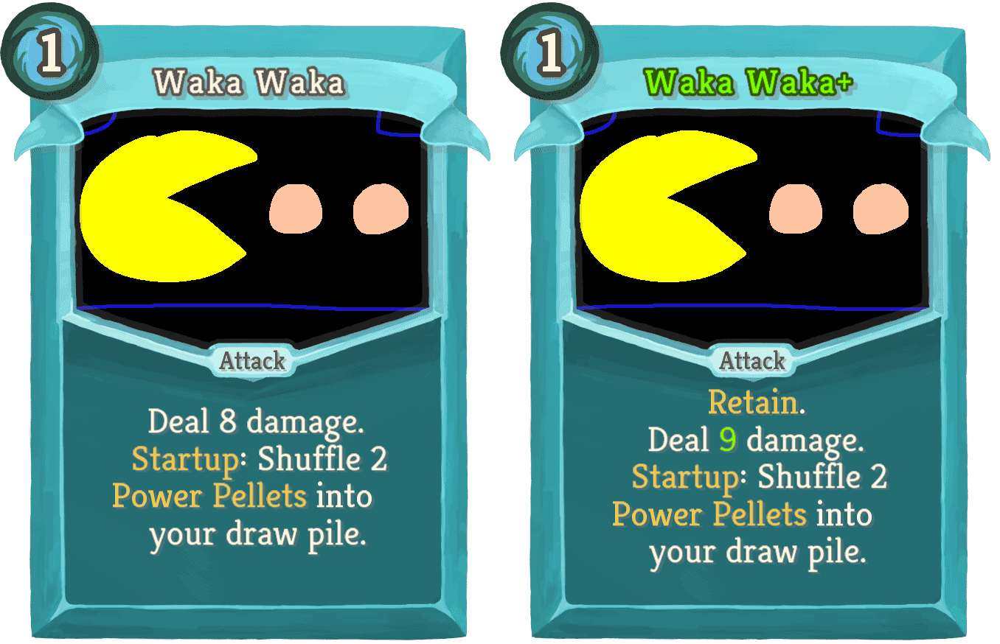 | Uncommon | Attack | 1 | (Retain.)Deal 8 (9) damage. Startup: Shuffle 2 Power Pellets into your draw pile. |
| Whaling | 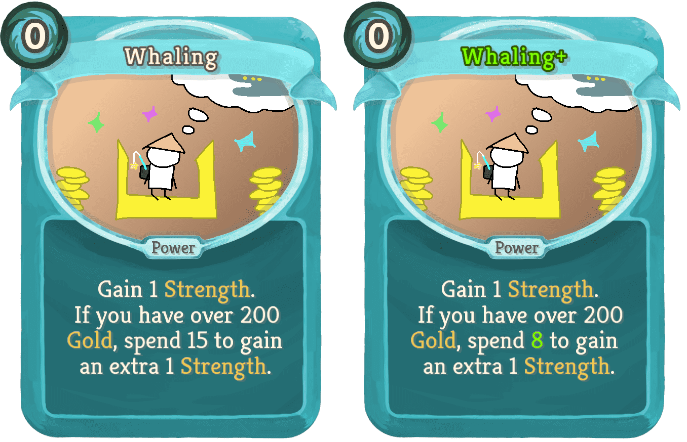 | Uncommon | Power | 0 | Gain 1 Strength. If you have over 200 Gold, spend 15 (8) to gain an extra 1 Strength. |
| Wizardry | 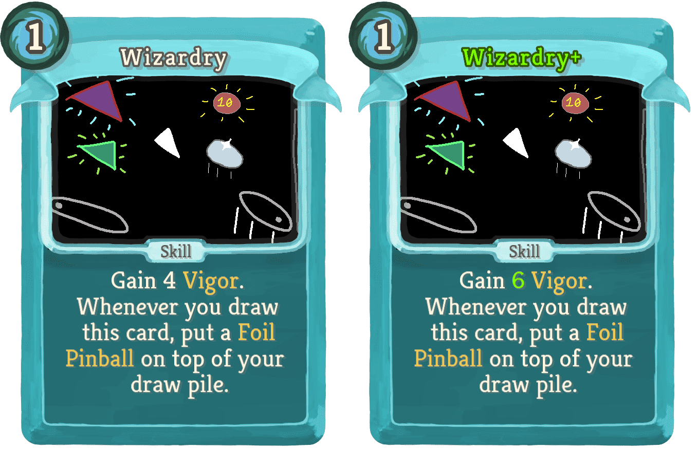 | Uncommon | Skill | 1 | Gain 4 (6) Vigor. Whenever you draw this card, put a fishing:Foil Pinball on top of your draw pile. |
| X Marks the Spot |  | Uncommon | Skill | 0 | Choose 1 of 3 cost X cards of any color to add into your hand. (Gain [E].)Exhaust. |
| Angler Form |  | Rare | Power | 3 | Retain. The first 3 (4) times you play a card each turn, draw 1 card. |
| Caffeinated | 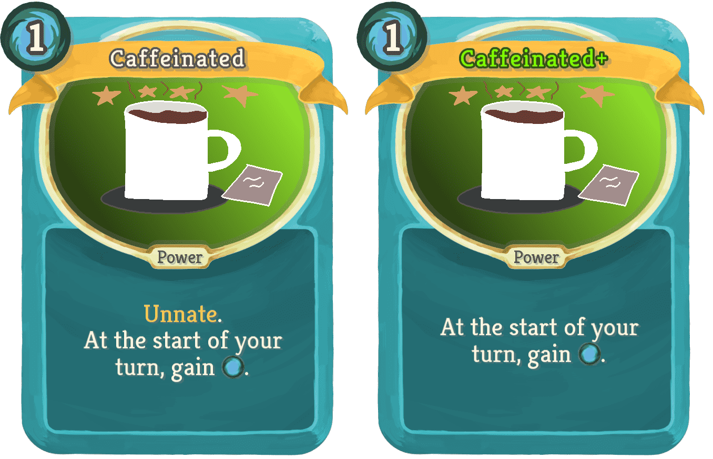 | Rare | Power | 1 | fishing:Unnate. (not fishing:Unnate.) At the start of your turn, gain [E]. |
| Chocolate Chip Cookie | 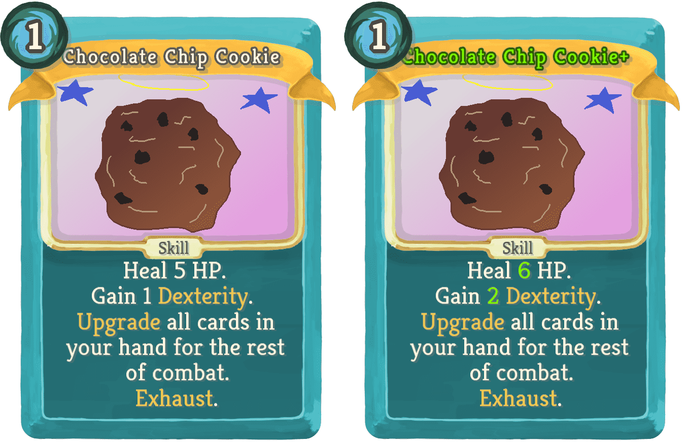 | Rare | Skill | 1 | Heal 5 (6) HP. Gain 1 (2) Dexterity. Upgrade all cards in your hand for the rest of combat. Exhaust. |
| Collector |  | Rare | Power | 2 | At the end of your turn, if you played 3 or more fishing:Foil cards, gain 2 (3) Strength. |
| Confetti Cannon | 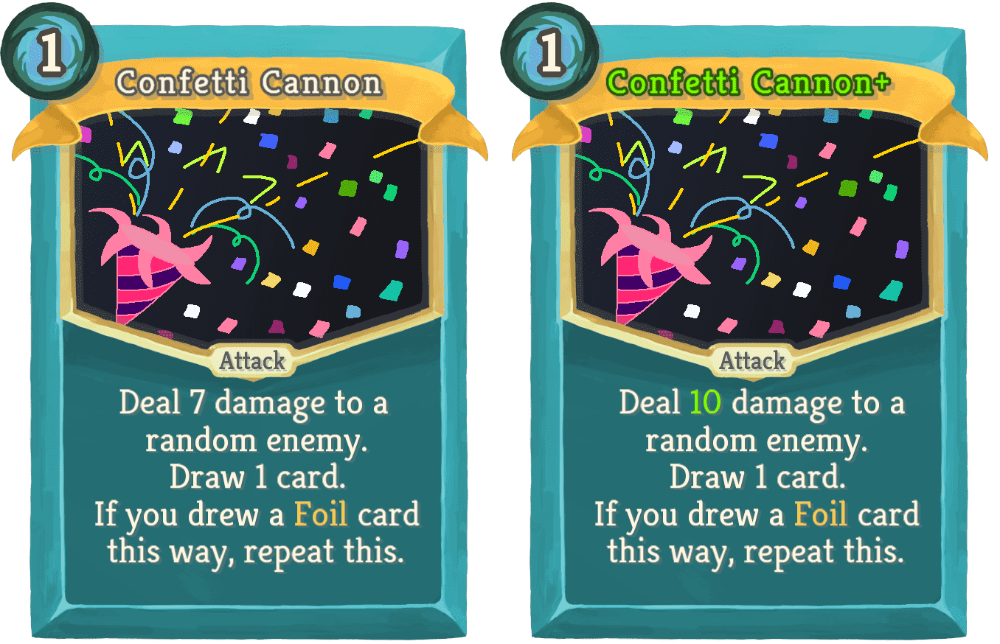 | Rare | Attack | 1 | Deal 7 (10) damage to a random enemy. Draw 1 card. If you drew a fishing:Foil card this way, repeat this. |
| Ends Of The Earth |  | Rare | Attack | 1 | Can be played from your discard pile. Gain 2 (3) Block. Deal 5 (6) damage. |
| Finishing Touches |  | Rare | Power | 2 (1) | Discard 2 cards. When you play a card, if it's the only card in your hand, play it twice. |
| Fishbones |  | Rare | Attack | 2 | Deal 15 damage. Deals 2 (3) additional damage for each card in your exhaust pile. |
| Gone Fishing |  | Rare | Skill | 3 | Gain 1 Intangible. Put 3 (5) fishing:Fish on top of your draw pile. Exhaust. |
| It Was THIIIIIS Big! |  | Rare | Skill | 2 (1) | Add 1 fishing:Fish into your hand. Double the effects of ALL current fishing:Fish. Exhaust. |
| Rated X | 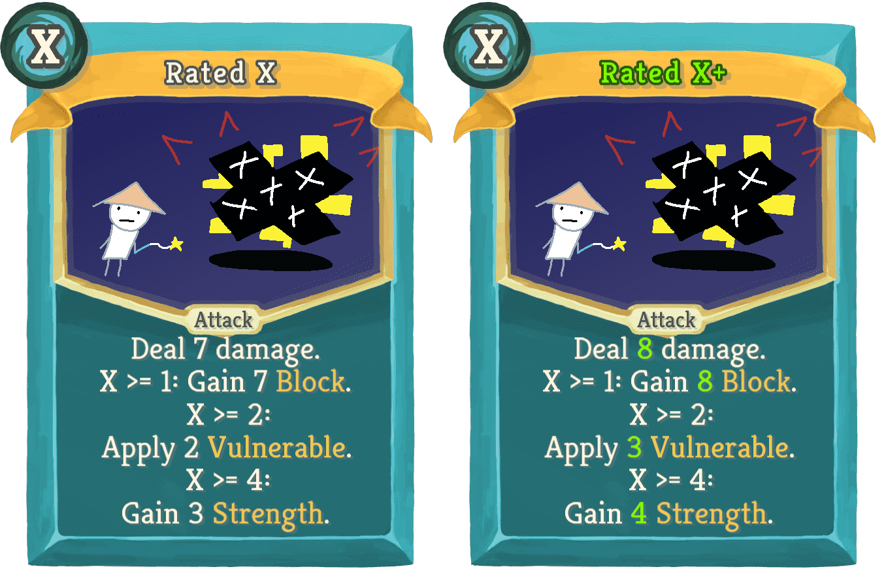 | Rare | Attack | X | Deal 7 (8) damage. X >= 1: Gain 7 (8) Block. X >= 2: Apply 2 (3) Vulnerable. X >= 4: Gain 3 (4) Strength. |
| Rod of Hope | 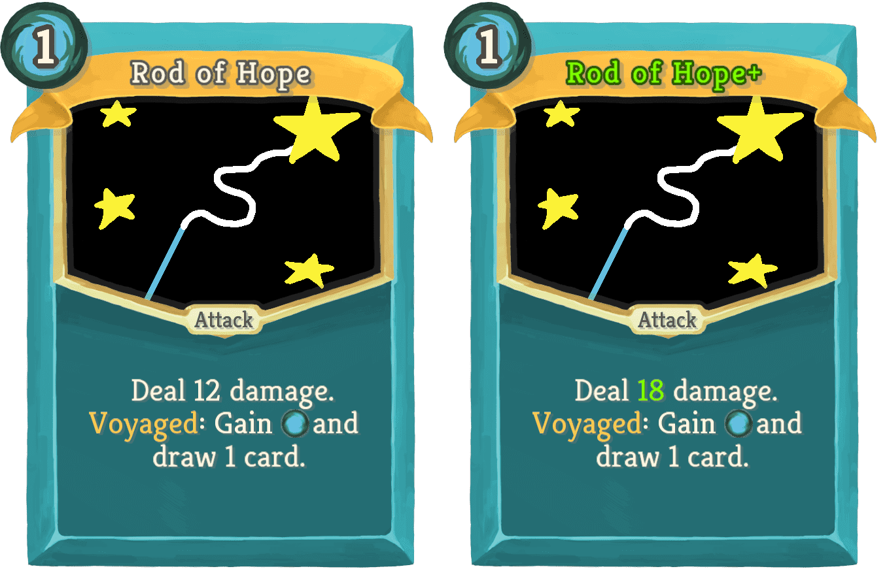 | Rare | Attack | 1 | Deal 12 (18) damage. fishing:Voyaged: Gain [E] and draw 1 card. |
| The Backpack |  | Rare | Skill | 1 | Gain 8 (12) Block. Discard your hand. Put a card from your discard pile into your hand. |
| The Final Card |  | Rare | Attack | 1 | fishing:Solo: Deal 21 (27) damage to ALL enemies. If this card ends the combat, Upgrade it (Thanks for playing). |
| The Harpoon |  | Rare | Attack | 3 | Deal 28 (36) damage. Startup fishing:Quest: Kill an enemy. Reward: Add The Whale into your hand. |
| The Prismatic Portal | 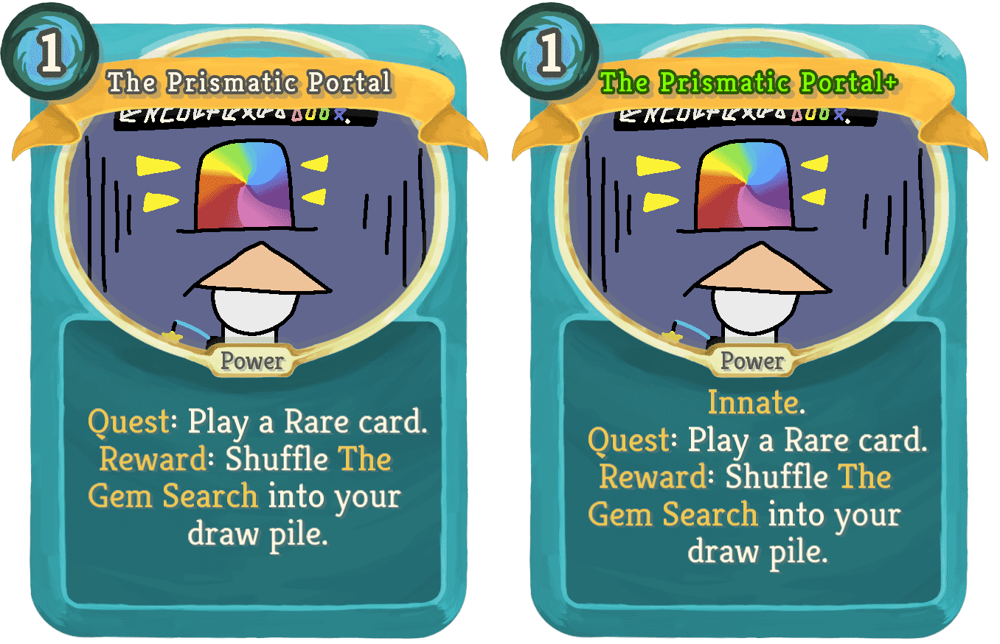 | Rare | Power | 1 | (Innate.)fishing:Quest: Play a Rare card. Reward: Shuffle The Gem Search into your draw pile. |
| Three of a Kind | 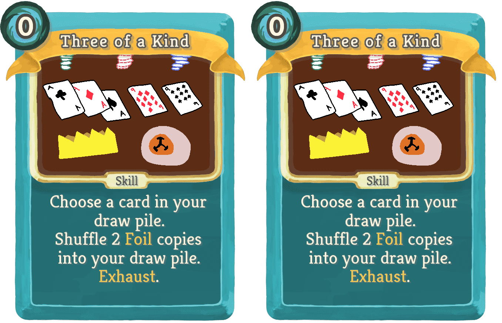 | Rare | Skill | 0 | Choose a card in your draw pile. Shuffle 2 (3) fishing:Foil copies into your draw pile. Exhaust. |
| Vexing Deal | 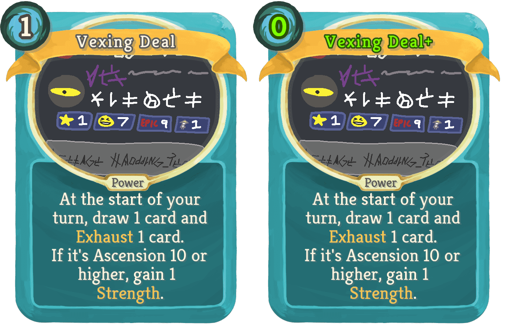 | Rare | Power | 1 (0) | At the start of your turn, draw 1 card and Exhaust 1 card. If it's Ascension 10 or higher, gain 1 Strength. |
| Name | Image | Tier | Pool | Description | Flavor |
|---|
| The Rod | | Starter | Fishing_color | Upgrade the first 3 unupgraded fishing:Foil cards you draw each combat. | The only one of its kind. |
| Unagee Skull |  | Common | Fishing_color | At the start of each combat, add 1Fish into your hand. | Known to guard sunken ships long ago. |
| Goggles |  | Uncommon | Fishing_color | Whenever you end your turn with an empty hand, gain 1Strength. | "We may now cross the Sands." - Kublai the Great |
| Signpost | | Uncommon | Fishing_color | The first time you play a Power card each combat, gain 6Block and [E] . | "Welcome. You have come very far..." |
| Lucky Ring |  | Rare | Fishing_color | At the start of your 2nd turn, draw 1 card and gain [E] [E] . | The eye blinks just when you start to look away. |
| Newsletter |  | Rare | Fishing_color | The merchant's cards are fishing:Foil,Upgraded, and cost 25% less. | "Peculiar! A shimmering cube of false promises." - Ranwid |
| Old Bobber | | Rare | Fishing_color | Every time you play 3 Colorless cards in a single turn, deal 7 damage to ALL enemies. | The new one is shinier. |
| Broken Oar |  | Boss | Fishing_color | Gain [E] at the start of your turn. At the start of combat, shuffle 4Shivs into your draw pile. | Most trips to the Spire are one-way. |
| Final Results | | Boss | Fishing_color | At the start of combat, add an Upgradedfishing:FoilMiracle,Smite, and Safety into your hand. | You were never gonna get it. |
| Rainbow Rod | | Boss | Fishing_color | Replaces The Rod.Upgrade the first 2 unupgraded cards you draw each turn. | Fishing 100 |
| Maelstrom Ankh | | Shop | Fishing_color | You no longer find Boots,Guppies, or Piranhas. | Into the depths. |
{kind=link}
{kind=link}
{kind=link}
{kind=link}
{kind=link}
{kind=link}
{kind=link}
{kind=link}
{kind=link}
{kind=link}
{kind=link}
{kind=link}
{kind=link}
{kind=link}
{kind=link}
{kind=link}
{kind=link}
{kind=link}
{kind=link}
{kind=link}
{kind=link}
{kind=link}
{kind=link}
{kind=link}
{kind=link}
{kind=link}
{kind=link}
{kind=link}
{kind=link}
{kind=link}
{kind=link}
{kind=link}
{kind=link}
{kind=link}
{kind=link}
{kind=link}
{kind=link}
{kind=link}
{kind=link}
{kind=link}
{kind=link}
{kind=link}


{kind=link}
{kind=link}
{kind=link}